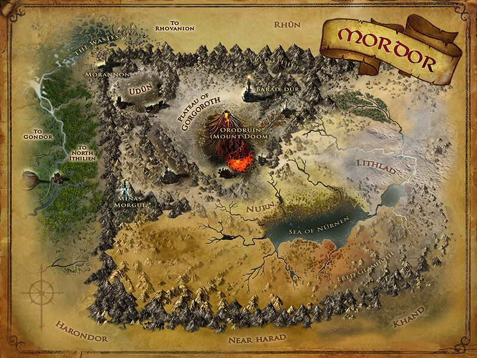
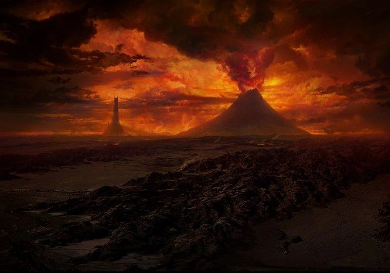

Le Mordor (Sindarin Pays noir/sombre) est une région de la Terre du Milieu. Il est le royaume de Sauron dès le Deuxième Âge lorsque son maître Morgoth est vaincu. C'est une terre très peu fertile, semi-désertique à son arrivée, mais elle devient un véritable enfer quand il commence à y régner. Tout le nord du Mordor est enténébré par Orodruin, un volcan immense qui sert de forge au Seigneur Ténébreux.
 